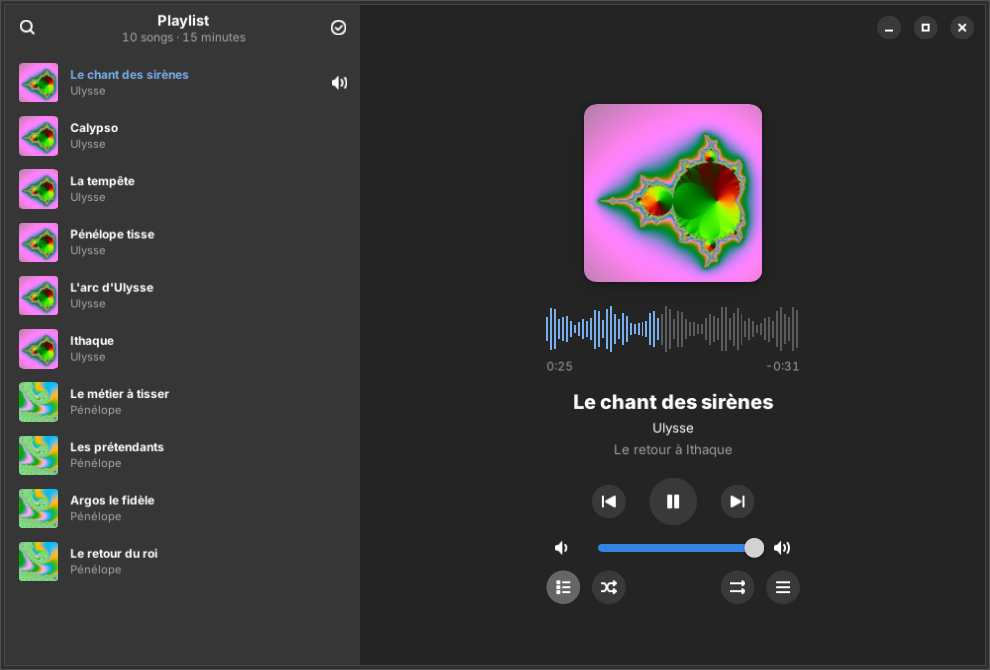
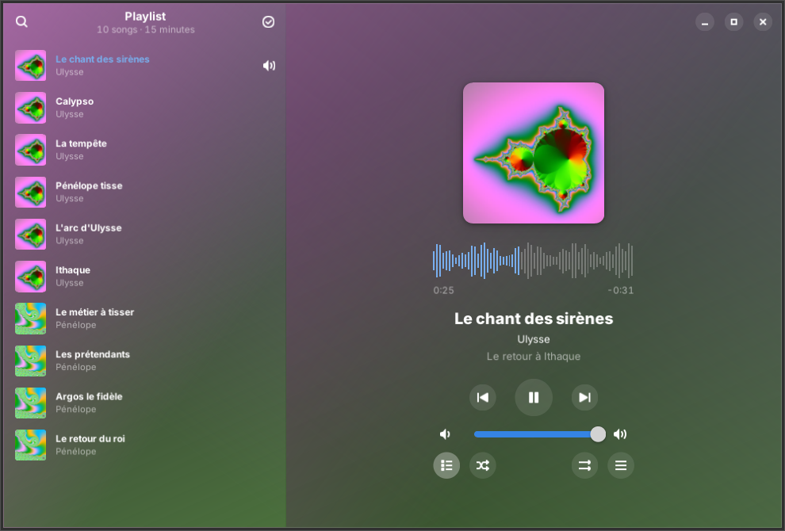
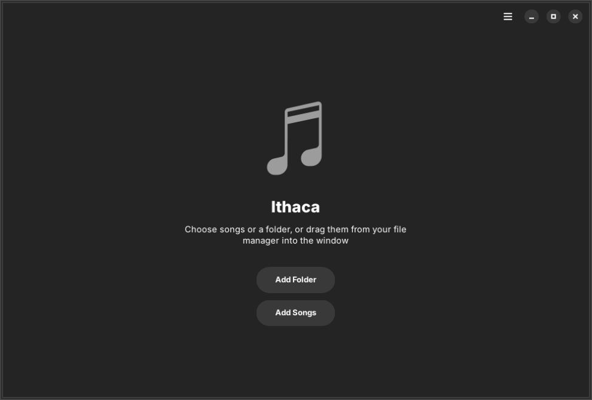
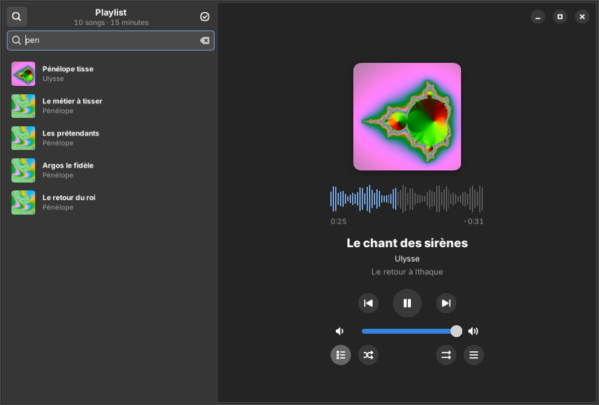
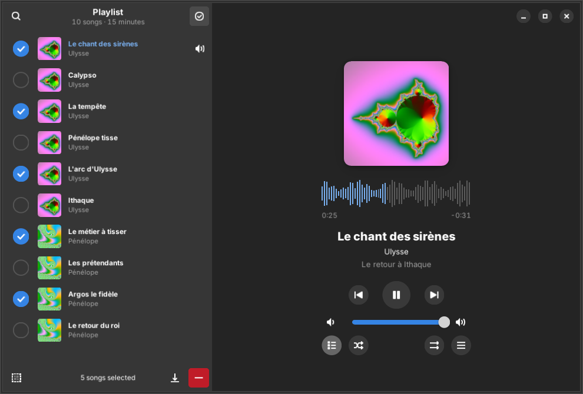
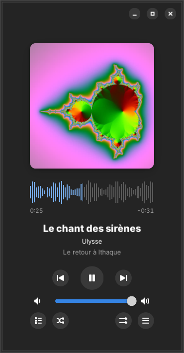
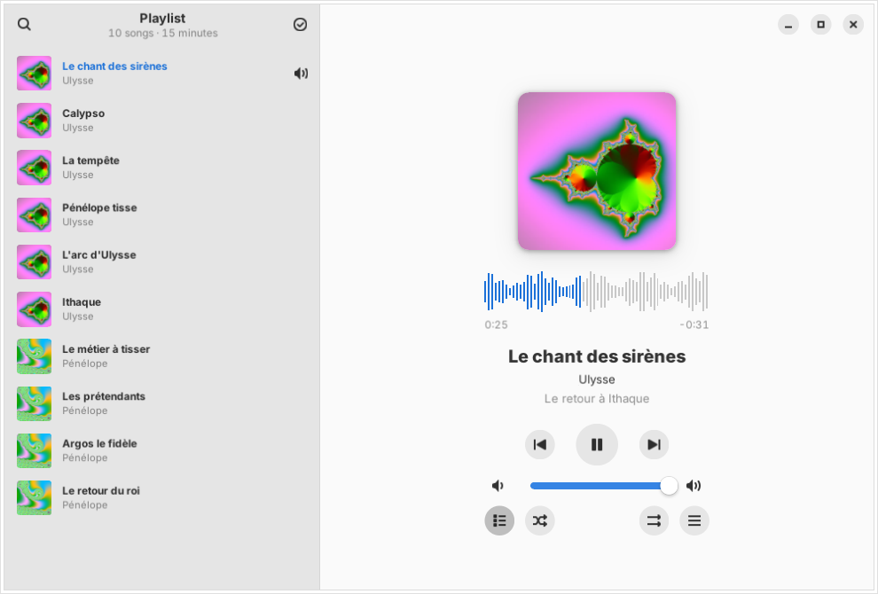
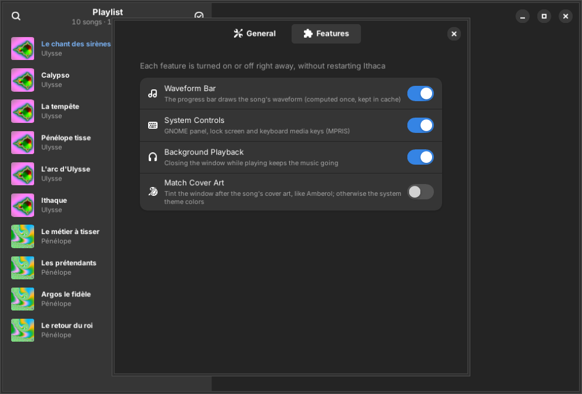

Ithaca is a small music player for GNOME. No library to manage, no tags to edit: open songs, folders or playlists and they join the queue. Large cover art, a waveform progress bar, gapless playback — inspired by Amberol, without Flatpak.

Real screenshot · play queue (F9) · Adwaita dark
A big square cover, the title, the artist and the album, and a progress bar that draws the song itself. Click or drag the waveform to jump anywhere.
cover.jpg / folder.png from the folder.
Your music already lives in folders. Ithaca doesn't scan your disk or build a database: drop an album on the window, use “Open With” in your file manager, or pass it on the command line.
ithaca album/ from a terminal sends it to the player already open.
The queue slides in beside the player. Type a few letters to find a song — accents don't matter — or switch to selection mode to remove or save several at once.


Open a playlist like a folder. Save the queue — or a selection — as a playlist with relative paths: copy it with the music to a USB stick or another computer, and it still plays.

Make the window small and keep it in a corner: the queue folds away, the cover shrinks, the controls stay.
Out of the box, Ithaca has no colours of its own: it follows your GTK4 theme, light or dark, with your accent colour. Want the Amberol look? Switch on cover colors.

Drag the handle
Waveform, system controls, background playback, cover colors: each one is a switch, applied instantly, no restart.

Ithaca plugs into GNOME the way a native player should, and keeps out of the way the rest of the time.
GNOME's media panel, the lock screen and your keyboard's media keys.
MPRISClose the window, the music goes on. A tray icon and a notification bring it back — or quit.
AppIndicatorAutomatic suspend waits while music is playing.
inhibitAlbum or track gain, peaks respected: loud and quiet albums play at the same level, never clipping.
album · trackLive albums and DJ mixes flow from one track to the next without a gap.
GStreamerStations from your M3U or PLS files, with their logo and the title of the song on air.
ICYMP3, FLAC, Ogg, Opus, WAV… and AAC, WMA or APE with gstreamer1.0-libav.
GStreamerSpace, Ctrl+← / →, Shift+← / → to skip 10 s, Ctrl+M to mute, Ctrl+F to search.
Ctrl+?A small Python app using your distribution's GTK and GStreamer — nothing duplicated.
aptIthaca is available for Ubuntu 24.04 “Noble” and 26.04 “Resolute” and their derivatives — Zorin OS 18, Linux Mint 22 — from a PPA. Updates then arrive with the rest of your system.
$ sudo add-apt-repository ppa:nourpon/ithaca $ sudo apt update && sudo apt install ithaca # optional: WMA, APE and other less common formats $ sudo apt install gstreamer1.0-libav
sudo apt install ./ithaca_*_all.debRequirements: Python 3.10+, PyGObject, GTK ≥ 4.14, libadwaita ≥ 1.5, GStreamer 1.x — all installed by the package. Inspired by Amberol by Emmanuele Bassi, rewritten in Python; foundations shared with Odysseus.